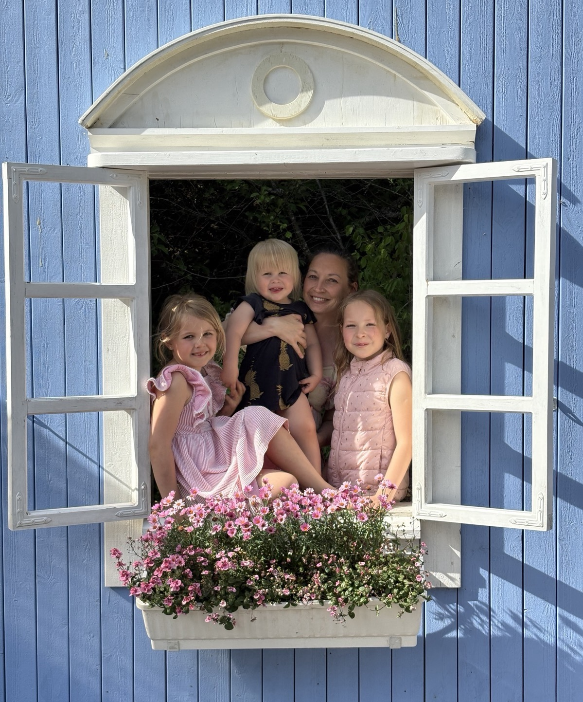

Uupunut, mutta et pysty pysähtymään
Keho on jatkuvassa valmiustilassa — lepo tuntuu mahdottomalta, vaikka voimat ovat lopussa.
Hermoston tukea äitiyden arkeen
Kun sinä hengität, koti hengittää.
Jos arki käy kierroksilla, aloita pienestä. Hengittävä äiti kokoaa yhteen hengityksen, kehon ja arjen mikroharjoitukset uupuneelle äidille.
Ilmainen Hermosto Reset Mini — 7 päivän opasTuntuuko tutulta?
Nämä ovat tavallisia merkkejä kuormasta. Tunnistatko itsesi?
Keho on jatkuvassa valmiustilassa — lepo tuntuu mahdottomalta, vaikka voimat ovat lopussa.
Uni on kevyttä ja rikkonaista — mieli ei pysähdy, vaikka keho anelisi lepoa.
Pinna on lyhyt ja keho jännittynyt — räjähdät pienestä, ja kadut heti perään.
Lista ei lyhene, vaikka tekisit mitä. Akku on tyhjä, mutta käyt silti päälle.
muista tämä
Hermosto rauhoittuu pienistä, toistuvista viesteistä.
Aloita yhdestä mahdollisesta teosta.
Valitse oma askelesi
Valitse aloitus, joka tuntuu tänään mahdolliselta.
7 päivän opas · lataa heti
Ilmainen 7 päivän opas uupuneelle äidille, joka kaipaa pientä, konkreettista alkua hermoston rauhoittamiseen.
19,90 € · kertamaksu · välitön PDF-lataus
21 päivää · 21 askelta kohti levollisempaa arkea ja kevyempää vanhemmuutta. Lempeä mutta käytännöllinen opas äidille, jonka hermosto kaipaa tukea.
Ilmoittaudu jonoon — ole ensimmäinen
Videovalmennus, jossa teet oikeat muutokset rutiineihin, systeemeihin, kotiin ja suhtautumiseen.
Tulossa myös: Keholliset harjoitukset · Hengittävä Koti -valmennus
Hengittävä hetki
Seuraa ympyrää. Sisään nenän kautta, ulos pitkään ja pehmeästi. Rytmi 4 – 2 – 6 kertoo hermostollesi: olet turvassa.
Musiikkilista
Rauhoittava soittolista uupuneelle äidille. Laita taustalle aamuun, autoon tai iltaan, kun hermosto kaipaa pehmeämpää ääntä. Voit avata listan heti Spotifysta.
aamusta iltaan
Valitse pieni seuraava askel. Ilmainen opas ja soittolista avautuvat heti. Hermosto Reset 21 vie Maradevi Storen kassapolkuun.
Ei odottelua. Valitse askel ja jatka rauhassa.
Kiitos.
Hengitä rauhassa — linkki avautuu seuraavassa vaiheessa.
Mitä saat mukaan
Harjoitukset mahtuvat lapsiperheen arkeen: hengitys, kehon pehmentäminen, mikrotauot ja rajojen lempeä vahvistaminen.
Saat sanoja sille, miksi lepo voi tuntua vaikealta ja miksi keho jää valmiustilaan vielä silloinkin, kun hetki olisi rauhallinen.
Opas auttaa palaamaan kehoon myös keskeneräisen kodin, äänten ja tavallisen arjen keskellä.

”Ei täydellisyyttä. Ei suorituksia. Vain lupa hengittää.”
Minusta
Olin se äiti, joka teki kaiken oikein — mutta jonka hermosto kävi ylikierroksilla jatkuvasti. Uupumus ei johtunut laiskuudesta. Se johtui siitä, että hermostoni oli oppinut, ettei lepo ole turvallista.
Kun löysin hermoston rauhoittamisen työkalut — pienet, toistuvat teot — kaikki muuttui. Ei hetkessä, vaan hitaasti. Niin kuin oikeat muutokset tapahtuvat.
Nyt autan muita äitejä löytämään saman tilan. Koska tiedän: kun äiti hengittää, koko koti hengittää.
Juliana
Hengittävän Äidin luoja, äiti
olet tervetullut sellaisena kuin olet
Aloita tänään. Seitsemän lempeää päivää — ei suoritusta, vain hengitystä.